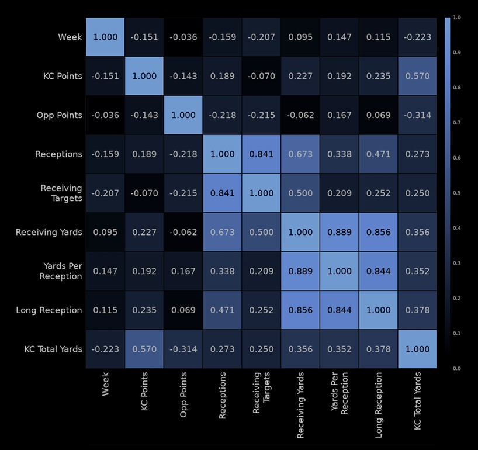
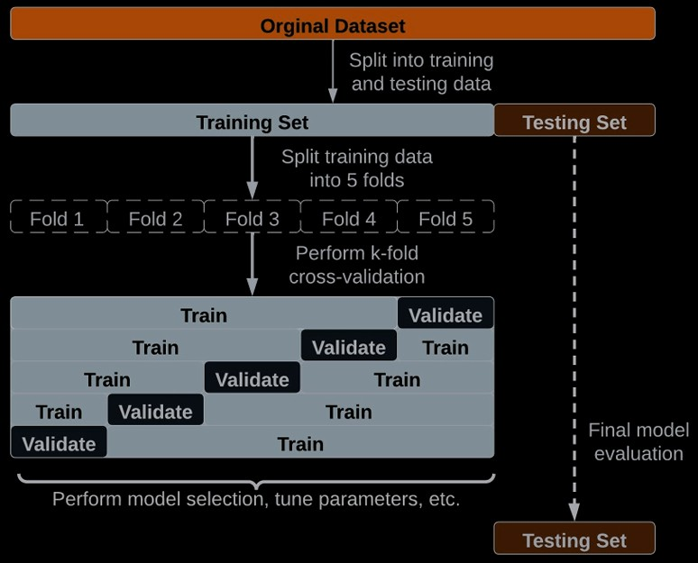

Ensuring machine learning models perform well requires robust evaluation and optimization techniques. This page covers key methods to measure and enhance model accuracy and generalization.
Evaluation Metrics
Metrics quantify model performance. For classification:
- Accuracy: Correct predictions / total predictions.
- Precision: True positives / (true positives + false positives).
- Recall: True positives / (true positives + false negatives).
- F1-Score: 2 * (precision * recall) / (precision + recall).
- ROC-AUC: Area under the ROC curve.
For regression: Mean Squared Error (MSE), R-squared.

Cross-Validation
Cross-validation tests model generalization. In k-fold cross-validation, data is split into k subsets, training on k-1 and testing on the remaining subset, repeated k times.
Benefit: Reduces overfitting risk.

Hyperparameter Tuning
Hyperparameters (e.g., learning rate) are optimized to boost performance.
- Grid Search: Tests all combinations in a grid.
- Random Search: Samples randomly from a range.
- Bayesian Optimization: Uses probability to target optimal values.
Tools like scikit-learn’s GridSearchCV simplify this process.